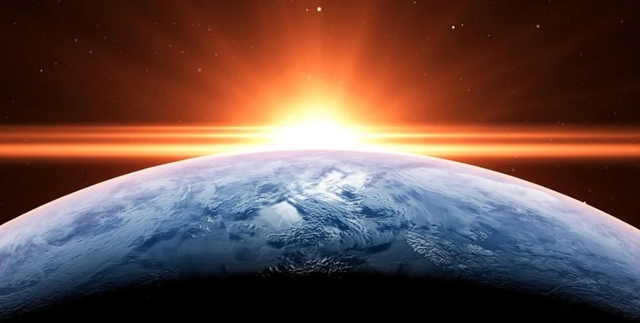
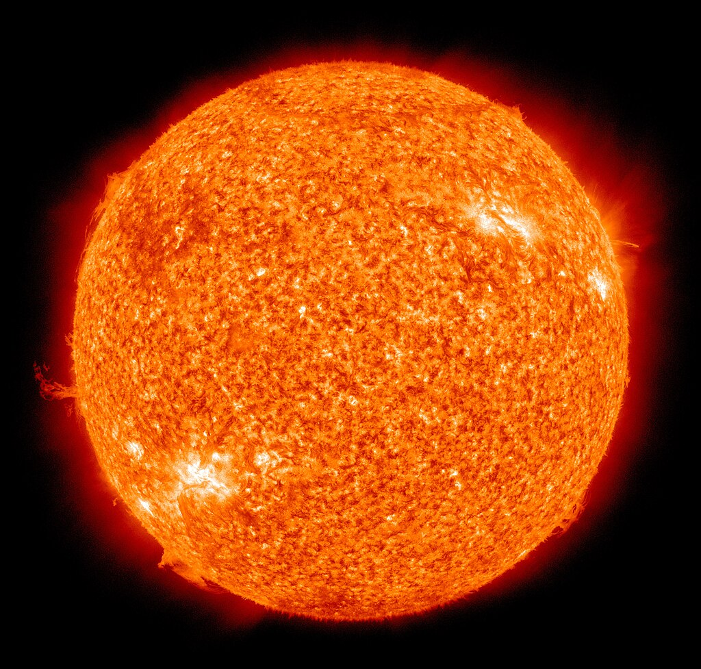
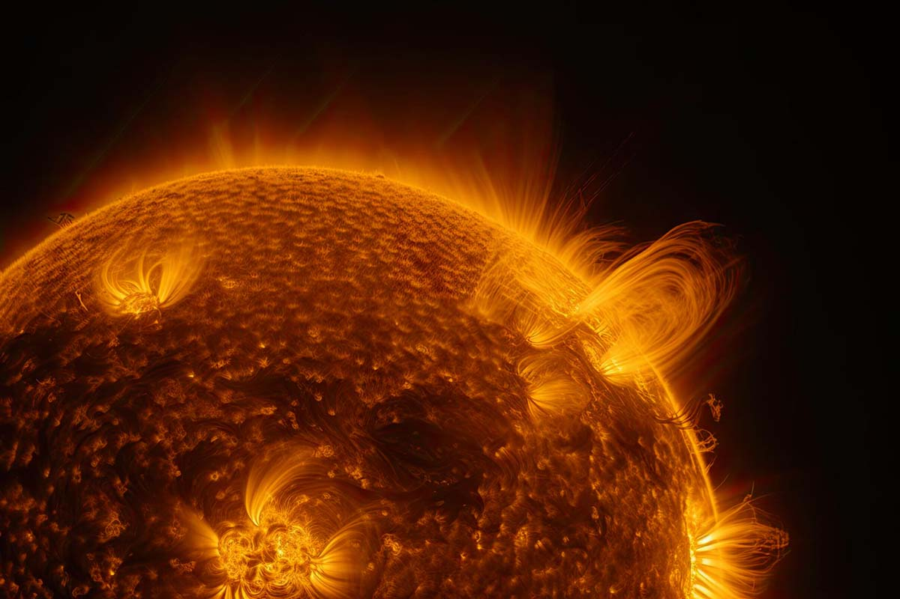
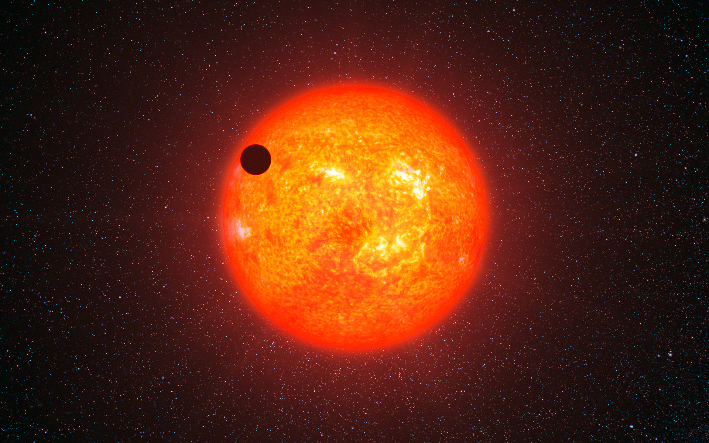

Сонце
Сонце — одна із зірок нашої Галактики (Чумацький Шлях) та єдина зірка Сонячної системи. Навколо Сонця звертаються інші об'єкти цієї системи: планети та їх супутники, карликові планети та їх супутники, астероїди, метеороїди, комети та космічний пил.
Сонце на 73% складається з водню та на 25% з гелію. Сонце - найближча до Землі зірка. Середня віддаленість Сонця від Землі — 149,6 млн км — приблизно дорівнює астрономічній одиниці, а видимий кутовий діаметр при спостереженні із Землі, як і у Місяця, — трохи більше за півградус (31—32 хвилини). Сонце знаходиться на відстані близько 26 000 світлових років від центру Чумацького Шляху і обертається навколо нього на скриньковій орбіті, роблячи один оборот за 225-250 мільйонів років. Орбітальна швидкість Сонця дорівнює 217 км/с - таким чином, світловий рік воно проходить приблизно за 1400 земних років, а одну астрономічну одиницю - за 8 земних діб.
Теорія виникнення Сонця
Вважається, що Сонце сформувалося 4,5 мільярда років тому. Одна з поширених теорій виникнення Сонячної системи передбачає, що її формування було викликано вибухами однієї чи кількох наднових зірок. Це припущення засноване, зокрема, на тому, що в речовині Сонячної системи міститься аномально велика частка золота та урану, які могли б бути результатом ендотермічних реакцій, спричинених цим вибухом, або ядерного перетворення елементів шляхом поглинання нейтронів речовиною масивної зірки другого покоління.
Майбутнє зірки
За підрахунками вчених приблизно через 7,6-7,8 мільярда років, до віку 12,2 млрд років, ядро Сонця розігріється настільки, що запустить процес горіння водню в його оболонці. Це спричинить бурхливе розширення зовнішніх оболонок світила, таким чином Сонце залишить головну послідовність, на якій воно знаходилося майже з моменту свого народження, і стане червоним гігантом. У цій фазі радіус Сонця збільшиться у 256 разів у порівнянні із сучасним. Розширення зірки призведе до сильного збільшення її світності (в 2700 разів) і охолодження поверхні до 2650 К. Очевидно, зовнішні шари Сонця, що розширюються, в цей час досягнуть сучасної орбіти Землі. Дослідження 2008 року показують, що Земля, швидше за все, буде поглинена Сонцем внаслідок уповільнення обертання Сонця та подальших припливних взаємодій із його зовнішньою оболонкою, які призведуть до наближення орбіти Землі назад до Сонця. Навіть якщо Земля уникне поглинання Сонцем, вся вода на ній перейде в газоподібний стан, а її атмосфера буде зірвана найсильнішим сонячним вітром.
Сонячна активність
Комплекс явищ, спричинених генерацією сильних магнітних полів на Сонці, називають сонячною активністю. Ці поля проявляються у фотосфері як сонячні плями і викликають такі явища, як сонячні спалахи, генерацію потоків прискорених частинок, зміни у рівнях електромагнітного випромінювання Сонця у різних діапазонах, корональні викиди маси, обурення сонячного вітру, варіації потоків галактичних космічних променів тощо.
З сонячною активністю пов'язані також варіації геомагнітної активності (у тому числі і магнітні бурі), які є наслідком обурень міжпланетного середовища, що досягають Землі, викликаних, у свою чергу, активними явищами на Сонці.